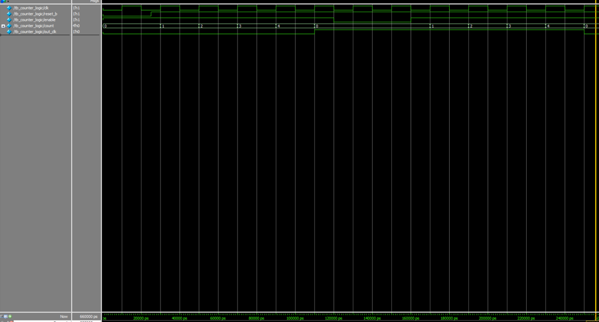
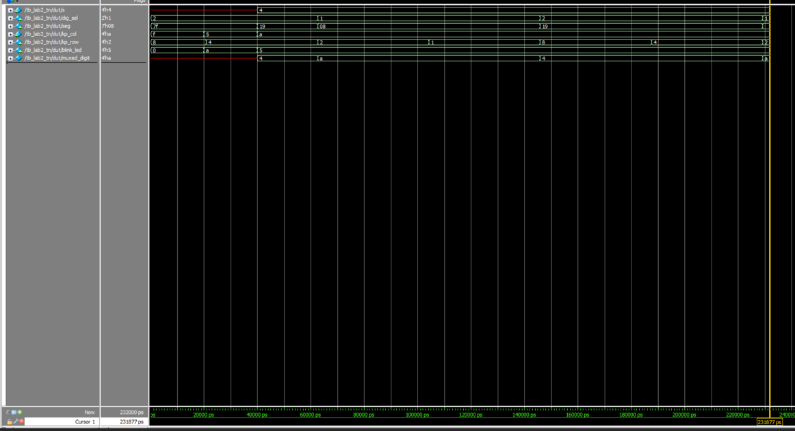
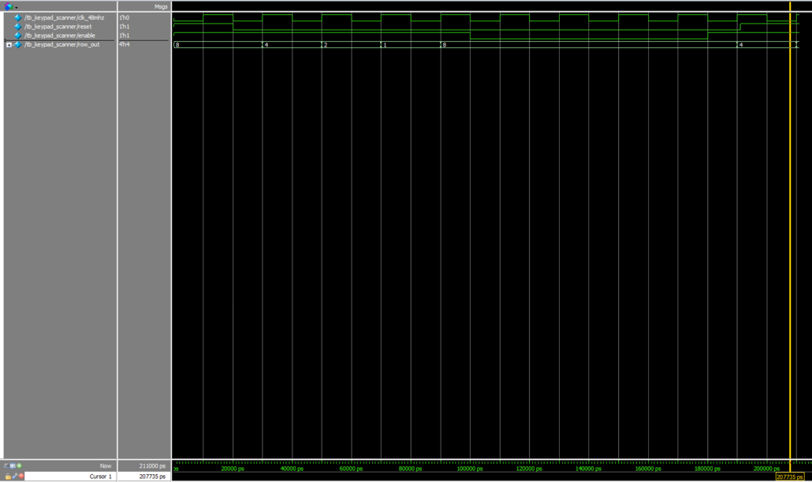

Lab 2: Multiplexed 7-Segment Display
Hardware
The list of components used included:
- 1x E155 kit materials
- 1x Dual Seven-Segment Common-Anode Display (or 2x Single)
- 2x 2N3906 PNP transistors
- 4x 2N3904 NPN tansistors
- 1x 4x4 Matrix Keypad
- 2x 4-position DIP switch blocks (one on the E155 Development Board, other on the breadboard)
- 6x 1 kOhms resistors (transistors’ base current limiters, see “Calculations” section)
- 7x 220 ohms resistors (display cathodes’ current limiters, see “Calculations” section)
- 4x 330 ohms resistors (standard value for on-board LEDs’ current limiters in response to keypresses)
- Use internal pullups for keypad columns
Resources used for hardware connections included:
- E155 Development Board
- 2N3906 PNP Transistor Datasheet
- 2N3904 NPN Transistor Datasheet
- MAN6400 Series Seven Segment Displays Datasheet OR HDSP Common Anode Seven-Segment Display Datasheet
- HX-543 4x4 Matrix Membrane Keypad Datasheet
Due to the limited quantity of available FPGA pins that aren’t already used, the same pins were used for the keypad columns kp_col[3:0] and external breadboard DIP switch ext_in[3:0] because they are both 4-bit digital inputs. When testing the matrix keypad function, the external breadboard DIP switch must be completely turned off before pressing keys and observing the corresponding on-board LED behavior. When testing the seven-segment display multiplexer, flip the external breadboard switch as necessary for certain hexadecimal digits.
Verilog
Lab 2 modules included “counter_logic” and “seven_segment_decoder” from Lab 1. New modules included “keypad_scanner” and “lab2_tn” as the top-level module to tackle the challenge of creating a multiplexed seven-segment display and a 4x4 matrix keypad scanner with LED indicators.
Reveal System Verilog Code: counter_logic Module
/*-----------------------------------------------------------------------------
* Name: Tiffany Nguyen
* Email: tiffnguyen@g.hmc.edu
* Date: September 12, 2026
*
* Purpose: A parameterized synchronous counter module used to track clock cycles up to a
* specified maximum value and toggle a signal at a desired frequency. Implemented in a single
* always_ff block with synchronous reset and enable controls to meet style specifications.
*---------------------------------------------------------------------------*/
`timescale 1 ns/1 ps
module counter_logic #(
parameter int WIDTH = 26,
parameter int MAX_COUNT = 47999999
)(
input logic clk, // Clock input
input logic reset_b, // Synchronous active-high reset
input logic enable, // Active-high clock enable
output logic [WIDTH-1:0] count, // Current count value output
output logic out_clk // Divided toggle output clock
);
logic [WIDTH-1:0] count_reg = '0;
logic state_reg = 1'b0;
always_ff @(posedge clk) begin
if (reset_b) begin
count_reg <= '0;
state_reg <= 1'b0;
end else if (enable) begin
if (count_reg >= MAX_COUNT) begin
count_reg <= '0;
state_reg <= ~state_reg;
end else begin
count_reg <= count_reg + 1'b1;
end
end
end
assign count = count_reg;
assign out_clk = state_reg;
endmoduleReveal System Verilog Code: seven_segment_decoder Module
/*-----------------------------------------------------------------------------
* Name: Tiffany Nguyen
* Email: tiffnguyen@g.hmc.edu
* Date: September 4, 2026
*
* Purpose: This module uses a combinational logic block to decode the 4-bit binary input
* s[3:0] into hex digits (0 to F). A common-anode 7-segment display is used, so segments are
* active-low (driving 0 turns the segment ON, 1 turns it OFF). Formatted with explicit case
* handling to eliminate latch inference.
*
* Let: seg[6:0] = {G, F, E, D, C, B, A}
* Logic behavior: 0 = ON, 1 = OFF
*---------------------------------------------------------------------------*/
`timescale 1 ns/1 ps
module seven_segment_decoder (
input logic [3:0] binary_input, // 4-bit input from DIP switches / 4-bit hexadecimal input value
output logic [6:0] seg_output // Recall how letting seg[0] = A and seg[6] = G, so let [6:G, 5:F, 4:E, 3:D, 2:C, 1:B, 0:A]
);
always_comb begin
case (binary_input)
// Common-Anode: 0 = Segment ON, 1 = Segment OFF
// Bits: [6:0] seg -> G F E D C B A based on on letting seg[6] be G and seg[0] be A in Fig. 1 of E155 Lab 1 instructions
4'h0: seg_output = 7'b1000000; // ‘0’
4'h1: seg_output = 7'b1111001; // ‘ 1’
4'h2: seg_output = 7'b0100100; // ‘2’
4'h3: seg_output = 7'b0110000; // ‘3’
4'h4: seg_output = 7'b0011001; // ‘4’
4'h5: seg_output = 7'b0010010; // ‘5’
4'h6: seg_output = 7'b0000010; // ‘6’, Unique from b
4'h7: seg_output = 7'b1111000; // ‘7’
4'h8: seg_output = 7'b0000000; // ‘8’, Unique from b (All segments ON)
4'h9: seg_output = 7'b0010000; // ‘9’
4'hA: seg_output = 7'b0001000; // ‘A’
4'hb: seg_output = 7'b0000011; // Unique lowercase 'b' (to avoid looking like ‘6’ or ‘8’)
4'hC: seg_output = 7'b1000110; // ‘C’
4'hd: seg_output = 7'b0100001; // Unique lowercase ‘d’
4'hE: seg_output = 7'b0000110; // ‘E’
4'hF: seg_output = 7'b0001110; // ‘F’
default: seg_output = 7'b1111111; // All segments OFF
endcase
end
endmoduleReveal System Verilog Code: keypad_scanner Module
/*-----------------------------------------------------------------------------
* Name: Tiffany Nguyen
* Email: tiffnguyen@g.hmc.edu
* Date: September 12, 2026
*
* Purpose: This module acts as a non-canonical state machine to rotate between outputting
* 1000, 0100, 0010, and 0001 at a toggle rate of 2 Hz by using a counter and some output
* logic. A matrix keypad is also used, where outputs are the rows and inputs are the columns of
* the keypad.
* Includes: Only includes instances of a counter_logic module and combinational assign
* statements that convert from the counter output to output values. It is also resettable and
* enable-able.
*---------------------------------------------------------------------------*/
`timescale 1 ns/1 ps
module keypad_scanner #(
parameter int SCAN_MAX_COUNT = 47999999
)(
input logic clk_48mhz, // 48 MHz main internal clock
input logic reset, // Active-high reset
input logic enable, // Active-high enable
output logic [3:0] row_out // 4 active-high scanner row outputs
);
logic [25:0] scan_count;
int step_width;
// Calculate quadrant boundaries dynamically based on parameter
assign step_width = (SCAN_MAX_COUNT + 1) / 4;
// Parameterized instance of the core Lab 1 counter module
counter_logic #(
.WIDTH(26),
.MAX_COUNT(SCAN_MAX_COUNT)
) internal_scan_counter (
.clk(clk_48mhz),
.reset_b(reset),
.enable(enable),
.count(scan_count),
.out_clk()
);
// Pure combinational mapping to prevent latches or sequential elements
assign row_out = (scan_count < step_width) ? 4'b1000 :
(scan_count < (step_width * 2)) ? 4'b0100 :
(scan_count < (step_width * 3)) ? 4'b0010 : 4'b0001;
endmoduleReveal System Verilog Code: lab2_tn Module
/*-----------------------------------------------------------------------------
* Name: Tiffany Nguyen
* Email: tiffnguyen@g.hmc.edu
* Date: September 12, 2026
*
* Purpose: This top-level module exclusively has instances of HSOSC, 7-segment module, multiplexing counter module, scanning module and assign statements to implement multiplex and scanning passthrough.
*---------------------------------------------------------------------------*/
`timescale 1 ns/1 ps
module lab2_tn #(
parameter int MUX_MAX_COUNT = 23999,
parameter int SCAN_MAX_COUNT = 47999999
)(
// Display Pins
input logic [3:0] s, // On-board DIP switches (Right Digit)
//input logic [3:0] ext_in, // Breadboard DIP switches (Left Digit); excluded here because using same pins for ext_in and k_col to save physical pins
output logic [1:0] dig_sel, // Active-low digit anodes
output logic [6:0] seg, // Common active-low cathode lines
// Keypad Pins
input logic [3:0] kp_col, // Keypad column sense inputs
output logic [3:0] kp_row, // Keypad active-high row drive lines
output logic [3:0] blink_led // Column indicator feedback LEDs
);
// Structural net wires
logic clk_48mhz;
logic clk_1khz_toggle;
logic [3:0] muxed_digit;
// 1. Hardware Oscillator Primitive Instance
// Internal high-speed oscillator (copied from Lab 1 starter code’s top.sv but replaced “int_osc” with “clk_48mhz”)
HSOSC hf_osc (.CLKHFPU(1'b1), .CLKHFEN(1'b1), .CLKHF(clk_48mhz));
// 2. Multiplexing Counter Module Instance (Parameterized from Lab 1 Module)
counter_logic #(
.WIDTH(16),
.MAX_COUNT(MUX_MAX_COUNT)
) mux_timebase_counter (
.clk(clk_48mhz),
.reset_b(1'b0),
.enable(1'b1),
.count(),
.out_clk(clk_1khz_toggle)
);
// 3. Keypad Scanning Module Instance (Resettable and Enable-able)
keypad_scanner #(
.SCAN_MAX_COUNT(SCAN_MAX_COUNT)
) scanner_inst (
.clk_48mhz(clk_48mhz),
.reset(1'b0),
.enable(1'b1),
.row_out(kp_row)
);
// 4. Structural Continuous Assign Passthrough Statements
assign dig_sel = clk_1khz_toggle ? 2'b01 : 2'b10;
assign muxed_digit = clk_1khz_toggle ? kp_col : s;
assign blink_led = ~kp_col; // Inverts pulled-up idle pins back to active-high LEDs
// 5. Single Instantiated Shared Seven-Segment Decoder Module
seven_segment_decoder single_decoder (
.binary_input(muxed_digit),
.seg_output(seg)
);
endmoduleSimulation
Testbenches for the scanning and top-level modules were created and then simulated to evaluate code performance to expectations.
For the top-level module, it was tested for its multiplexing functionality and LED driving functionality. Signals include the inputs (s[3:0], ext_in[3:0], kp_col[3:0]) and outputs (seg[6:0], dig_sel[1:0], kp_row[3:0], blink_led[3:0]). Based on the simulation results, expectations has been met.
Since “counter_logic” and “seven_segment_decoder” were both modules from Lab 1, no repeated simulations were done for them in Lab 2. Refer to Lab 1 for the testbenches and simulation results of these modules. In Lab 2, the WIDTH and MAX_COUNT for “counter_logic” was modified, so the simulation for it is included here.
Simulation Screenshots - Lab 2 Version: tb_counter_logic

Reveal Testbench Code: tb_lab2_tn
/*-----------------------------------------------------------------------------
* Name: Tiffany Nguyen
* Email: tiffnguyen@g.hmc.edu
* Date: September 20, 2026
* Purpose: An automated self-checking integration testbench for lab2_tn.sv. Exercises dual
* 7-segment display multiplexing functionality and matrix keypad open-drain/collector output
* LED driver functionality. Does not drive an external clk signal since the top-level module
* handles its own clock generation internally vs. HSOSC primitive (48 MHz) based on Lab 1
* instructions.
* - Manipulates the external data switches to check the time-multiplexed 7-segment display
* - Simulates the multi-key press to verify matrix keypad open-drain/collector output LED logic
-----------------------------------------------------------------------------*/
`timescale 1 ns/1 ps
module tb_lab2_tn();
logic [3:0] s;
//logic [3:0] ext_in;
logic [1:0] dig_sel;
logic [6:0] seg;
logic [3:0] kp_col;
logic [3:0] kp_row;
logic [3:0] blink_led;
// Instantiate master structural top module wrapper
lab2_tn #(
.MUX_MAX_COUNT(1), // Rapid 1 kHz display simulation scaler
.SCAN_MAX_COUNT(3) // Rapid 2 Hz scanner simulation scaler
) dut (.*);
initial begin
$display("[START] Running top-level automated integration verification...");
// --------------------------------------------------------------------
// Step 1: Exercise Multi-Press LED Driving Functionality
// --------------------------------------------------------------------
// Idle condition (pull-up resistors hold lines high)
kp_col = 4'b1111;
#20;
assert (blink_led == 4'b0000) else $error("Idle feedback loop fault.");
// Simulate simultaneous 2-key contact closure on Columns 1 and 3
kp_col = 4'b0101;
#20;
assert (blink_led == 4'b1010)
$display("PASSED! Multi-press column triggers driven correctly back out to LEDs.");
else
$error("FAILED! Inversion matrix logic failed multi-press checks.");
// --------------------------------------------------------------------
// Step 2: Exercise Time-Multiplexing Selection & Shared Decoder Loop
// --------------------------------------------------------------------
s = 4'h4; // Right digit data target: "4"
kp_col = 4'hA; // Left digit data target: "A" ; When no keys are pressed, breadboard DIP switches (ext_in) drive this node
#100;
// Sample data while the Right selection active window is targeted
while (dig_sel !== 2'b10) #5;
#1; // Settling window
assert (seg == 7'b0011001) // Active-low segment mapping verification for "4"
$display("PASSED! Right switch data fed accurately to shared decoder bus.");
else
$error("FAILED! Cathode tracking corrupted during right window phase.");
// Sample data while the Left selection active window is targeted
while (dig_sel !== 2'b01) #5;
#1;
assert (seg == 7'b0001000) // Active-low segment mapping verification for "A"
$display("PASSED! Left switch data fed accurately to shared decoder bus.");
else
$error("FAILED! Cathode tracking corrupted during left window phase.");
$display("[SUCCESS] Top-level structural integration checks completely clean.");
$finish;
end
endmodule
//====FOR QUESTASIM: Addressing module 'HSOSC' is not defined error====
module HSOSC #(
parameter CLKHF_DIV = "0b00"
)(
input CLKHFPU, // Power up signal
input CLKHFEN, // Enable signal
output logic CLKHF
);
// Mimic the internal hardware clock (~24 MHz typical base frequency)
initial begin
CLKHF = 1'b0;
forever #20.83 CLKHF = ~CLKHF;
end
endmodule
module VLO (
output O
);
assign O = 1'b0;
endmoduleSimulation Screenshots: tb_lab2_tn

For the scanner module, it was tested for all four output transitions (1000, 0100, 0010, and 0001), and the enable and reset features. The below simulation screenshot shows when row_out[3:0] = 1000.
Reveal Testbench Code: tb_keypad_scanner
/*-----------------------------------------------------------------------------
* Author: Tiffany Nguyen
* Email: tiffnguyen@g.hmc.edu
* Date: September 6, 2026
*
* Purpose: An automated self-checking stim/assert testbench for the keypad_scanner module
* (a non-canonical state machine). Overrides terminal counts / the 250 ms shift interval down to
* a tiny scale (4 clock cycles per quadrant, 16 cycles per full loop) to verify all 4 row/output
* transitions (1000, 0100, 0010, 0001), enable, and reset features.
-----------------------------------------------------------------------------*/
`timescale 1 ns/1 ps
module tb_keypad_scanner();
logic clk_48mhz;
logic reset;
logic enable;
logic [3:0] row_out;
keypad_scanner dut (
.clk_48mhz(clk_48mhz),
.reset(reset),
.enable(enable),
.row_out(row_out)
);
// Dynamic scale configuration override
// Sizer sets each quadrant to exactly 1 clock tick (0, 1, 2, 3) = 20 ns per row
defparam dut.SCAN_MAX_COUNT = 3;
// Generate 48 MHz clock (20ns period)
always begin
clk_48mhz = 1'b0; #10;
clk_48mhz = 1'b1; #10;
end
initial begin
$display("[START] Running automated keypad scanner sub-module verification...");
// --------------------------------------------------------------------
// Stage 1: Synchronous Reset and Initialization
// --------------------------------------------------------------------
reset = 1'b1;
enable = 1'b1;
@(posedge clk_48mhz);
#1; // Settling window
assert (row_out == 4'b1000) else $error("Reset state initialization failure.");
// Release reset exactly on a falling edge to align the simulation timeline
@(negedge clk_48mhz);
reset = 1'b0;
// --------------------------------------------------------------------
// Stage 2: Verify All Four Quadrant State Transitions Sequentially
// --------------------------------------------------------------------
// Quadrant 1 (Tick 0): Outputs 4'b1000 (Row 3)
@(posedge clk_48mhz); #1;
assert (row_out == 4'b0100)
$display("PASSED! Transitioned cleanly to Row 2 (0100).");
else
$error("FAILED! Missed transition to Row 2.");
// Quadrant 2 (Tick 1): Outputs 4'b0100 (Row 2)
@(posedge clk_48mhz); #1;
assert (row_out == 4'b0010)
$display("PASSED! Transitioned cleanly to Row 1 (0010).");
else
$error("FAILED! Missed transition to Row 1.");
// Quadrant 3 (Tick 2): Outputs 4'b0010 (Row 1)
@(posedge clk_48mhz); #1;
assert (row_out == 4'b0001)
$display("PASSED! Transitioned cleanly to Row 0 (0001).");
else
$error("FAILED! Missed transition to Row 0.");
// Quadrant 4 (Tick 3): Outputs 4'b0001 (Row 0) -> Rolls over back to Row 3
@(posedge clk_48mhz); #1;
assert (row_out == 4'b1000)
$display("PASSED! Scanner successfully rolled over back to state 1000.");
else
$error("FAILED! Scanner loop broke on rollover.");
// --------------------------------------------------------------------
// Stage 3: Verify Enable Pin Stalling Functionality
// --------------------------------------------------------------------
// Pull enable low immediately on the falling edge of the rollover state
@(negedge clk_48mhz);
enable = 1'b0;
$display("[STAGE] Pulling enable low. Freezing state counter.");
// Wait 4 full clock cycles while frozen to verify the counter stays locked
repeat (4) @(posedge clk_48mhz); #1;
assert (row_out == 4'b1000) // Must remain locked at Row 3 (1000)
$display("PASSED! Enable line frozen; counter successfully stalled state updates.");
else
$error("FAILED! Counter mutated while enable was low! Got %b", row_out);
// --------------------------------------------------------------------
// Stage 4: Verify Enable Release and Operational Overrides
// --------------------------------------------------------------------
@(negedge clk_48mhz);
enable = 1'b1; // Release freeze stall
// Wait 1 clock cycle to watch it advance cleanly to the next row step
@(posedge clk_48mhz); #1;
assert (row_out == 4'b0100)
$display("PASSED! Scanner successfully resumed execution path and shifted to Row 2.");
else
$error("FAILED! Scanner failed to resume execution path. Got %b", row_out);
// Assert operational clear mid-count
reset = 1'b1;
@(posedge clk_48mhz); #1;
assert (row_out == 4'b1000)
$display("PASSED! Active reset successfully snapped mid-count state back to 1000.");
else
$error("FAILED! Mid-count operational reset failure.");
$display("[SUCCESS] All scanning submodule specifications fully verified.");
$finish;
end
endmoduleSimulation Screenshots: tb_keypad_scanner

Block Diagram
Block diagrams for each of the Lab 2 modules was created.
Lab 2 Block Diagrams
Calculations
Links to datasheets used for calculations:
- iCE40 Datasheet
- MAN6400 Series Seven Segment Displays Datasheet OR HDSP Common Anode Seven-Segment Display Datasheet
- 2N3906 PNP Transistor Datasheet
- 2N3904 NPN Transistor Datasheet
Calculations for current limiting resistors to ensure currents are operating in recommended conditions were computed. This included for the 7-segment display’s shared segment cathodes (A-G), the 2N3906 PNP for digit selectors of the 7-segment display, and the 2N3904 NPN transistors for the matrix keypad’s rows and open-drain / collector output.
Shared Segment Cathodes (A-G) Related Calculations:
- Summarize relevant parameters and extract any additional electrical characteristics from the iCE40 FPGA’s datasheet.
- Choose LVCMOS 3.3 from Section 4.17 Table 4.13 when the E155 Development Board power rail will supply 3.3V.
- Voltage Drop Across Resistor (\(V_R\)): This includes the power rail supply voltage (\(V_{CC}\)) and LED segment voltage drop (\(V_F\)). To not be optimistic, the maximum FPGA low-level output voltage (\(V_{OL}\) = 0.4 V) is not included.
- Target current operating range: FPGA’s maximum single-pin safety ceiling of \(I_{OL}\)= 8.0 mA. This will be safety operating current considered throughout all of the calculations.
- Summarize relevant parameters and extract any additional electrical characteristics from the common anode seven-segment display’s datasheet.
- Supply voltage (\(V_{CC}\)): 3.3V (supplied by the E155 Development Board power rail)
- Forward on-voltage (\(V_F\)): 1.8V typical (for HDSP series at \(I_F\) = 8.0 mA, from Figure 10 on display datasheet)
- Target current range: 5-20 mA
- Maximum DC forward current per segment or DP: 15 mA (safe operatoinal upper threshold)
- Use Ohm’s Law to derive the resistance value to use in the 7-segment display (\(R_{SEG}\)) for each individual cathode path.
- Voltage drop across the resistor: \(V_R\) = \(V_{CC}\) - \(V_F\) = 3.3V - 1.8V = 1.5V
- Ohm’s Law to find \(R_{SEG}\): If 8.0 mA is the safe operating current being considered, then it should be targeted to have 4.0 mA per segment to maintain safe, balanced operations on the display cathodes. So, \(R_{SEG} = \frac{V_R}{4 mA} = \frac{1.5V}{0.004 A}\) = 375 \(\Omega\), which has the closest standard resistor value as 330 \(\Omega\). However, a 220 \(\Omega\) resistor can also be used depending on availability of resistors.
- Check if \(R_{SEG}\) is within the safe operating current of 8.0 mA by using Ohm’s Law.
- \(I_{SEG} = \frac{V_R}{R_{SEG}} = \frac{1.5V}{220 \Omega} \approx 0.007 A = 7 mA\)
2N3906 PNP Transistors Calculations (Digit Selectors of Seven-Segment Display):
- Summarize relevant parameters and extract any additional electrical characteristics from the iCE40 FPGA’s datasheet.
- Choose LVCMOS 3.3 from Section 4.17 Table 4.13 when the E155 Development Board power rail will supply 3.3V.
- Minimum FPGA high-level output voltage: \(V_{OH} = V_{CCIO} - 0.4V = 3.3V - 0.4V = 2.9V\)
- Target current operating range: FPGA’s maximum single-pin safety ceiling of \(I_{OL}\)= 8.0 mA
- Summarize relevant parameters and extract any additional electrical characteristics from the 2N3906 PNP transistor’s datasheet.
- To turn on any Bipolar Junction Transistor (BJT), current must flow across the control junction from the Base to the Emitter (for an NPN) or from the Emitter to the Base (for a PNP).
- For testing conditions of the base-emitter saturation voltage and collector-emitter saturation voltage, let \(I_C\) = 10 mA and \(I_B\) = 1.0 mA so that the force current gain is \(\frac{I_C}{I_B} = \frac{10 mA}{1.0 mA} = 10\).
- Under page 2’s “On Characteristics,” the base-emitter saturation voltage is \(V_{BE(sat)}\) = 0.65V (min) to 0.85V (max). However, this can be rounded to a 0.7V as the universal standard for calculating base currents, so let \(V_{BE(sat)}\) = 0.7V for these calculations. On the same page, the collector-emitter saturation voltage is \(V_{CE(sat)}\) = 0.25V.
- Use Ohm’s Law to derive the value for the base resistor of the PNP transistor.
- Find the Load Requirement (\(I_C\)): When all 7 segments (A-G) from 7-segment display are ON, the transistor passes \(I_C = 7 segments \times 4.0 mA = 28 mA\), where 4.0 mA was the targeted safe operating current per segment.
- Find the Required Base Current (\(I_B\)) using BJT saturation thinking: To saturate a transistor switch reliably and using info about the base-emitter saturation voltage and collector-emitter saturation voltage from the PNP datasheet, a design for a force current gain of \(\frac{I_C}{I_B} = \frac{10 mA}{1.0 mA} = 10\) can be considered. So, the base current is \(I_B = \frac{28 mA}{10} = 2.8 mA\). This is valid because it is safely below the FPGA’s 8.0 mA absolute maximum current ceiling from Secton 4.17 of the iCE40 FPGA’s datasheet.
- Find the Required Base Resistor Value: The voltage drop across the base resistor is \(V_B\) = \(V_{CC}\) - \(V_{BE(sat)}\) = 3.3V - 0.7V = 2.6V. Then, using Ohm’s Law to find \(R_B\), \(R_B = \frac{V_B}{I_B} = \frac{2.6V}{0.0028 A}\) = 926 \(\Omega\), which has the closest standard resistor value as 1000 \(\Omega\) = 1 k \(\Omega\).
2N3904 NPN Transistors Calculations (Keypad Rows, Open-Drain/Collector Output):
- Summarize relevant parameters and extract any additional electrical characteristics from the iCE40 FPGA’s datasheet.
- Same as for PNP
- Summarize relevant parameters and extract any additional electrical characteristics from the 2N3904 NPN transistor’s datasheet.
- Same as for PNP
- Use Ohm’s Law to derive the value for the base resistor of the NPN transistor.
- Find the Load Requirement (\(I_C\)): The keypad column inputs only draw a tiny amount of current through the 10 k \(\Omega\) pull-up resistors, so \(\frac{V_{CC}}{10 k \Omega} = \frac{3.3V}{10 k \Omega}\) = 0.33 mA. This means that the NPN base needs very little current to turn on.
- Find the Required Base Current (\(I_B\)) using BJT saturation thinking: Using similar thinking as the 2N3906 PNP calculations and the force current gain \(\frac{I_C}{I_B} = \frac{10 mA}{1.0 mA} = 10\), the base current is \(I_B = \frac{0.33 mA}{10} = 0.033 mA\). Although the calculated \(I_B\) is below the FPGA 8.0 mA absolute maximum current ceiling, it is quite small and it could make the circuit vulnerable to electrical noise and/or other potential issues. To address this and considering how a 1 k \(\Omega\) resistor is already considered for the 2N3906 PNP, let \(I_B\) = 2.2 mA n order to have a clean standard base resistor value of \(R_B\) = 1 k \(\Omega\) for 2N3904 NPN.
- Verify the Required Base Resistor Value: The voltage drop across the base resistor is \(V_B\) = \(V_{CC}\) - \(V_{BE(sat)}\) = 3.3V - 0.7V = 2.6V. Using Ohm’s Law to verify \(R_B\), \(I_B = \frac{V_B}{R_B} = \frac{2.6V}{1000 \Omega}\) = 2.6 mA. So, when the base resistor for 2N3904 NPN is \(R_B\) = 1000 \(\Omega\) = 1 k \(\Omega\), the current is 2.6 mA, which is safely below the FPGA 8.0 mA absolute maximum current ceiling.
Schematic
With consideration of what pins are already used by the E155 Development Board, the following schematics for the seven-segment display multiplexer and keypad scanner includes the pins used for Lab 2.
Lab 2 Schematics: Seven-Segment Display Multiplexer & Keypad Scanner
Conclusion
Number of hours spent working on the lab: at least 25 hours
By the end of the hours worked, the design requirements were all met to a certain extent. Learning challenges along the way included how to assign pins given the limited supply of them, hardware connections, how to draw block diagrams to represent the SystemVerilog code, and how the on-board LEDs are supposed to respond given the presses on the matrix keypad. This included addressing combinations, such as pressing keys diagonally across different rows and columns.
AI Reflection
For the first AI-generated result where it was given a prompt without a file, it created a “top_seven_seg mux” module. In this module, there was a clock divider for a 1 kHz total refresh rate, an input multiplexer, an instance for a “seven_seg_decoder” submodule, and an anode enable logic using case statements. For the “seven_seg_decoder” module it also provided, it used combinational logic for obtaining all of the hexadecimal digits. After typing the provided code, it failed to synthesize because there was no top module specified for the top-level design such that results may be inaccurate. The lack of having a top-level module also led to additional errors and warnings. I would then rate the output as a 4/10 because of the failed synthesis and lack of detail in the provided code.
For the second AI-generated result where it was given a prompt with a file, it created a “display_mux” module. In this module, there was an internal oscillator instantiation, a refresh rate counter and multiplexer selector, an input digit multiplexer, an instantiation of a single common-anode decoder, and an active-low anode enable logic. An assumption was that my modules would be used in the instantiations. Although the code is more thorough and related to what I would expect for Lab 2, synthesis failed because of syntax errors and then ignoring following errors until after previous errors are addressed. I would then rate the output as a 6/10 because it is more detailed, but the attempt to combine inspiration from the attached file and the previous prompt’s code led to syntax errors.
By adding a file, I think the usefulness of the generated HDL did improve. However, the given code for either prompt cannot be immediately used and expected to be successful.
AI-generated Results for Prompt Without a File
module top_seven_seg_mux (
input logic clk, // System clock (e.g., 50 MHz or 100 MHz)
input logic rst, // Active-high asynchronous reset
input logic [3:1] digit_0, // First 4-bit input digit
input logic [3:0] digit_1, // Second 4-bit input digit
output logic [6:0] seg, // Segment outputs {g, f, e, d, c, b, a} (active-low)
output logic [1:0] anode_en // Digit enable signals {Anode1, Anode0} (active-low)
);
// ------------------------------------------------------------------------
// 1. Clock Divider for Refresh Rate (~1 kHz total refresh rate)
// Toggles multiplexer back and forth at ~500 Hz per digit to prevent flicker.
// ------------------------------------------------------------------------
logic [15:0] refresh_counter;
logic select; // 0 = Digit 0 active, 1 = Digit 1 active
always_ff @(posedge clk or posedge rst) begin
if (rst) begin
refresh_counter <= '0;
select <= 1'b0;
end else begin
refresh_counter <= refresh_counter + 1'b1;
// Adjust bit tap based on your system clock speed (e.g., bit 15 works well for ~50 MHz)
select <= refresh_counter[15];
end
end
// ------------------------------------------------------------------------
// 2. Input Multiplexer
// Selecting which digit to route to the shared decoder
// ------------------------------------------------------------------------
logic [3:0] current_digit;
always_comb begin
case (select)
1'b0: current_digit = digit_0;
1'b1: current_digit = digit_1;
default: current_digit = 4'h0;
endcase
end
// ------------------------------------------------------------------------
// 3. Shared Common Anode Seven Segment Decoder Instance
// ------------------------------------------------------------------------
seven_seg_decoder decoder_inst (
.hex(current_digit),
.seg(seg)
);
// ------------------------------------------------------------------------
// 4. Anode Enable Logic (Active-Low)
// Activate only the anode corresponding to the current selected digit
// ------------------------------------------------------------------------
always_comb begin
case (select)
1'b0: anode_en = 2'b10; // Enable Digit 0 anode (anode_en[0] = 0)
1'b1: anode_en = 2'b01; // Enable Digit 1 anode (anode_en[1] = 0)
default: anode_en = 2'b11; // Disable both
endcase
end
endmodule
// ============================================================================
// Single Active-Low Common Anode Seven-Segment Decoder Module
// Segments ordered as: {g, f, e, d, c, b, a}
// ============================================================================
module seven_seg_decoder (
input logic [3:0] hex,
output logic [6:0] seg
);
always_comb begin
case (hex)
4'h0: seg = 7'b100_0000; // 0
4'h1: seg = 7'b111_1001; // 1
4'h2: seg = 7'b010_0100; // 2
4'h3: seg = 7'b011_0000; // 3
4'h4: seg = 7'b001_1001; // 4
4'h5: seg = 7'b001_0010; // 5
4'h6: seg = 7'b000_0010; // 6
4'h7: seg = 7'b111_1000; // 7
4'h8: seg = 7'b000_0000; // 8
4'h9: seg = 7'b001_0000; // 9
4'hA: seg = 7'b000_1000; // A
4'hB: seg = 7'b000_0011; // b
4'hC: seg = 7'b100_0110; // C
4'hD: seg = 7'b010_0001; // d
4'hE: seg = 7'b000_0110; // E
4'hF: seg = 7'b000_1110; // F
default: seg = 7'b111_1111; // All OFF
endcase
end
endmoduleAI-generated Results for Prompt With a File
/*
* Module: display_mux
* Purpose: Time-multiplexes a single common-anode 7-segment decoder between
* two 4-bit binary inputs (digit_0 and digit_1). Generates an internal
* clock using the Lattice iCE40 HSOSC IP core and uses active-low digit
* select pins to enable the corresponding display digit.
*/
`timescale 1 ns/1 ps
module display_mux (
input logic [3:0] digit_0, // 4-bit input for first digit
input logic [3:0] digit_1, // 4-bit input for second digit
output logic [6:0] seg_out, // Active-low segment outputs {G, F, E, D, C, B, A}
output logic [1:0] anode_en // Active-low digit selects {Anode_1, Anode_0}
);
// ------------------------------------------------------------------------
// 1. Internal Oscillator Instantiation (iCE40 HSOSC IP)
// Runs at default ~48 MHz (CLKHF_DIV = "0b00")
// ------------------------------------------------------------------------
logic clk;
HSOSC #(
.CLKHF_DIV("0b00") // Divide by 1 (48 MHz output)
) hf_osc (
.CLKHFEN(1'b1), // Oscillator Enable
.CLKHFPU(1'b1), // Power Up
.CLKHF(clk) // Output Clock Signal
);
// ------------------------------------------------------------------------
// 2. Refresh Rate Counter & Multiplexer Select
// Bit 15 of a 48 MHz clock toggles at ~732 Hz (~1.36 ms per digit switch),
// providing a smooth refresh rate without visual flicker or ghosting.
// ------------------------------------------------------------------------
logic [15:0] counter = '0;
logic sel;
always_ff @(posedge clk) begin
counter <= counter + 1'b1;
end
assign sel = counter[15];
// ------------------------------------------------------------------------
// 3. Input Digit Multiplexer
// Routes either digit_0 or digit_1 to the shared decoder
// ------------------------------------------------------------------------
logic [3:0] current_digit;
always_comb begin
case (sel)
1'b0: current_digit = digit_0;
1 me: current_digit = digit_1;
default: current_digit = 4'h0;
endcase
end
// ------------------------------------------------------------------------
// 4. Instantiation of Single Common-Anode Decoder
// ------------------------------------------------------------------------
seven_segment_decoder decoder_inst (
.binary_input (current_digit),
.seg_output (seg_out)
);
// ------------------------------------------------------------------------
// 5. Active-Low Anode Enable Logic
// Drives 0 to the common anode pin of the currently active digit
// ------------------------------------------------------------------------
always_comb begin
case (sel)
1'b0: anode_en = 2'b10; // Enable Digit 0 anode (anode_en[0] = 0)
1'b1: anode_en = 2'b01; // Enable Digit 1 anode (anode_en[1] = 0)
default: anode_en = 2'b11; // Disable both
endcase
end
endmodule